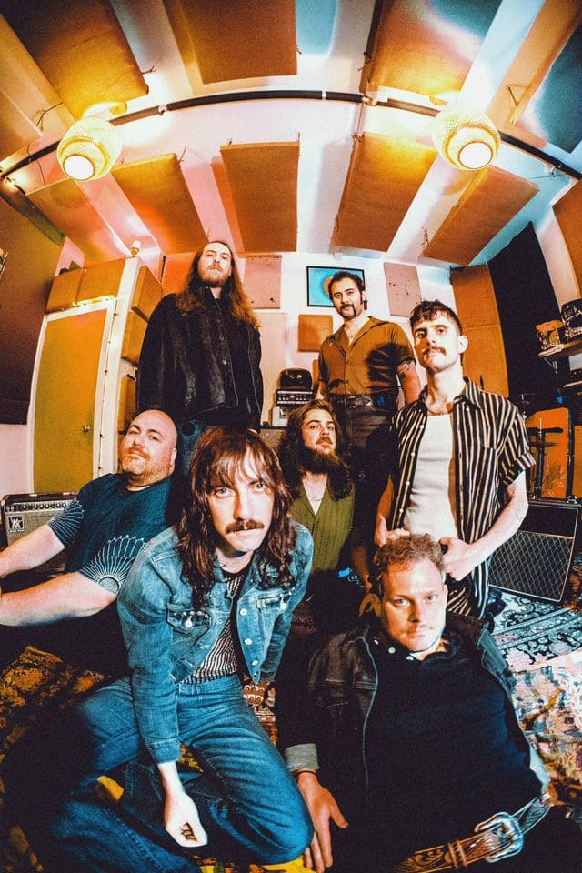

Evolfo offers an expansive interpretation of psychedelic rock - "We don't do the typical psychedelic rock platitudes," says guitarist and vocalist Matt Gibbs. Over three LPs, multiple singles and innumerable raucous received performances, Evolfo offers a feast of expressive psych soul, sinister garage, and spaced-out experimental rock a la Can and Yes. The band's collective approach to songwriting is similarly free from constraints of genre; as Impose Magazine declared, "you fall into the depths of the lyrics within seconds."
The septet formed over a decade ago in Boston, but truly found their home in New York City. There, Swink, Matt Gibbs (guitar, vox), Ben Adams, (guitar, vox), Ronnie Lanzilotta (bass), Dave Palazola (drums), Kai Sorensen (trumpet, vox), and Jared Yee (saxophone) developed a devoted following for their impassioned live performances at the city's underground basement parties, DIY spaces and dive bars. Their 2017 debut album, Last of the Acid Cowboys, was released via Royal Potato Family and racked up over 6M streams for its meld of eclectic and bizarro records into an ecstatic-yet-melodic freakout.
The band's sophomore release, 2021's Site Out of Mind, further expanded upon their influence and expression. The album was not just an exploration of the spirit and afterlife - but a peek behind the curtain and into Evolvo's unique collective. Recorded in Gibbs' home studio, the LP was inspired by science fiction and a group psychedelic experience. The following year, Evolfo released The Changer, an EP of uptempo electro outbursts culled from the psych detritus of Site Out of Mind. Evolfo played to type - highlighting their sonic fluidity and depth of study, boldly adapting to their aural whims.
Evolfo's upcoming release, Of Love, culls that whim and whimsy into 13 exploratory, straight-from-the-heart tracks. Available May 2026, Of Love was born from pandemic-era jam sessions in the band's new studio where Swink recorded hundreds of hours of tape just for fun. "Recording was not at all in the forefront of our mind," he says. "All of us are playing in a very uninhibited way, and I think that gives the record a lot of magic." A testament to Evolfo's collective growth and love for each other, Of Love will be the first release on the band's own label Food Of Love.
Outside of the studio, Evolfo have shared stages with legendary psych bands including WITCH, Mystery Lights, Levitation Room, and Elephant Stone. They concluded a nationwide tour with a milestone performance at San Francisco's Hardly Strictly Bluegrass Festival in 2025. Evolfo will keep the show on the road in 2026, cruising ever deeper into their comic groove and heavy psych experiments.